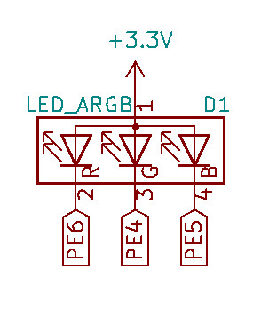
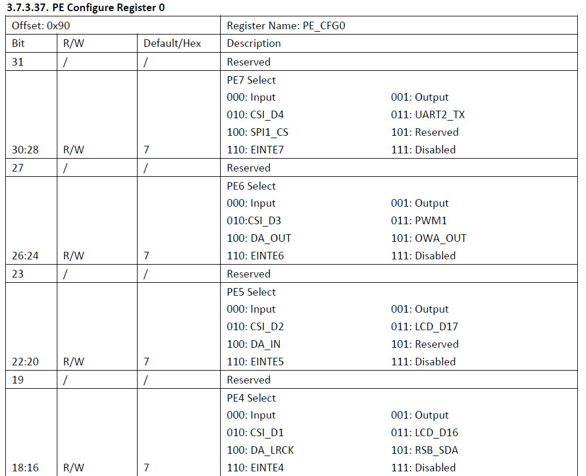
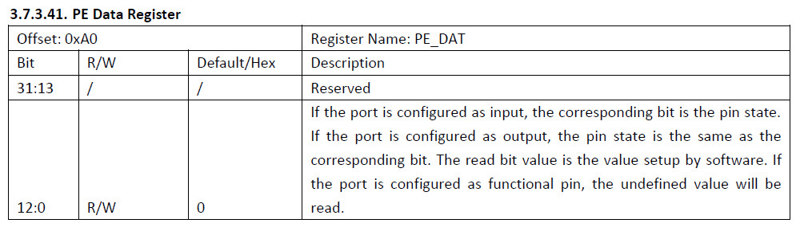
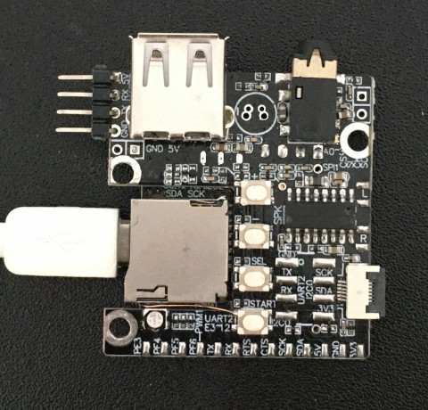
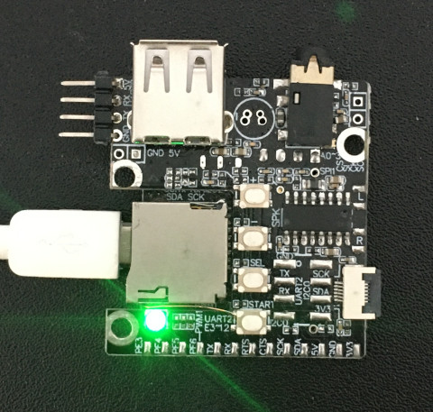

參考資料：
http://nano.lichee.pro/
https://mangopi.org/mangopi_r
電路圖




.global _start
.equ GPIO_BASE, 0x01c20800
.equ PE_CFG0, (GPIO_BASE + (4 * 0x24) + 0x00)
.equ PE_DATA, (GPIO_BASE + (4 * 0x24) + 0x10)
.arm
.text
_start:
.long 0xea000016
.byte 'e', 'G', 'O', 'N', '.', 'B', 'T', '0'
.long 0, __spl_size
.byte 'S', 'P', 'L', 2
.long 0, 0
.long 0, 0, 0, 0, 0, 0, 0, 0
.long 0, 0, 0, 0, 0, 0, 0, 0
_vector:
b reset
b .
b .
b .
b .
b .
b .
b .
reset:
ldr r0, =PE_CFG0
ldr r1, =0x00010000
str r1, [r0]
ldr r0, =PE_DATA
0:
ldr r1, =0x10
str r1, [r0]
ldr r2, =50000
1:
subs r2, #1
bne 1b
ldr r1, =0x00
str r1, [r0]
ldr r2, =50000
2:
subs r2, #1
bne 2b
b 0b
.end
main.ld
MEMORY {
RAM : ORIGIN = 0, LENGTH = 32K
}
SECTIONS {
text : {
*(.text*)
} > RAM
}
Makefile
all: arm-none-eabi-as -mcpu=arm9 -o main.o main.s arm-none-eabi-ld -T main.ld -o main.elf main.o arm-none-eabi-objcopy -O binary main.elf main.bin gcc mksunxi.c -o mksunxi ./mksunxi main.bin flash: sunxi-fel -p spiflash-write 0 main.bin clean: rm -rf main.bin main.o main.elf
接著按住START按鍵，然後插入USB至電腦，可以找到如下裝置
$ lsusb
Bus 002 Device 081: ID 1f3a:efe8 Onda (unverified) V972 tablet in flashing mode
編譯、燒錄
$ make
arm-none-eabi-as -mcpu=arm9 -o main.o main.s
arm-none-eabi-ld -T main.ld -o main.elf main.o
arm-none-eabi-objcopy -O binary main.elf main.bin
gcc mksunxi.c -o mksunxi
./mksunxi main.bin
The bootloader head has been fixed, spl size is 512 bytes.
$ make flash
sunxi-fel -p spiflash-write 0 main.bin
100% [================================================] 1 kB, 55.9 kB/s
重新上電後，即可執行SPI Flash裡面的程式

